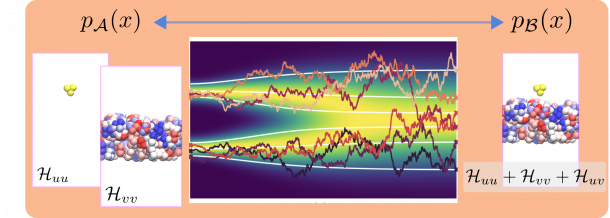

papers_r = FileAttachment("../data/all_papers.json").json()
n_columns = Object.entries(papers_r["doi"]).length
index_array = Array.from({length: n_columns}, (_, i) => i)
papers = index_array.map(
i => Object.fromEntries(
Object.entries(papers_r).map(([column, values]) => [column, values[i]])
)
)
function displayTable(papers_) {
return Inputs.table(papers_, {
columns: [
"doi",
"title",
"journal.name",
"journal.volume",
"year",
],
header: {
"journal.name": "journal",
"journal.volume": "volume",
},
format: {
doi: doi => htl.html`<a href=https://doi.org/${doi} target=_blank>${doi}</a>`,
title: title => htl.html`${title}`,
"journal.volume": volume => htl.html`<b>${volume}</b>`,
year: year => htl.html`${year}`,
},
width: {
"title": 10
},
layout: "auto",
})
}
// Selected by topic rather than by the three coauthors this used to name:
// a coauthor filter puts whatever those people publish next in front of
// candidates, whether or not it has anything to do with the project. These
// two topics are exactly the generative-ML work the position builds on --
// free energies from generative models, and measure transport between
// resolutions. See data/topics.yml.
displayTable(
papers.filter(
p => p.topics.includes("gen-free-energy")
|| p.topics.includes("resolution-transport")
)
)Generative machine learning for molecular thin films
phd student
active
Fully funded PhD position on generative machine learning for amorphous molecular thin films, in Tristan Bereau’s group at Heidelberg University.

A fully funded PhD position is available in the group of Prof. Tristan Bereau (tristanbereau.com) at the Institute for Theoretical Physics, Heidelberg University.
Project
The successful candidate will develop generative machine-learning methods for amorphous molecular thin films — the supramolecular structures that govern the performance of organic-electronic materials. Equilibrating such films by brute-force molecular dynamics is prohibitively slow. Instead, we build them using diffusion models at coarse-grained resolution, formulated so that the model yields not only realistic structures but also free energies.
The work sits at the interface of statistical mechanics, molecular simulation, and deep generative modeling. It is a joint project with the group of Prof. Ullrich Köthe, and is embedded in SIMPLAIX, a research initiative on multiscale simulation and machine learning funded by the Klaus Tschira Foundation.
Profile
- Solid grounding in statistical mechanics
- Experience with machine learning and/or molecular simulation; strong Python and PyTorch skills
- Genuine interest in method development, and comfort with mathematical formalism
- A degree in physics is required for admission to the Heidelberg Graduate School for Physics.
Conditions
The position is fully funded for three years at 75% E13 TV-L. There is no application deadline: applications will be reviewed on a rolling basis until the position is filled.
Please send a CV, a short statement of interest, and the names of two referees to Prof. Tristan Bereau at .
Relevant group publications around generative machine learning for molecular systems include: